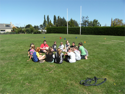
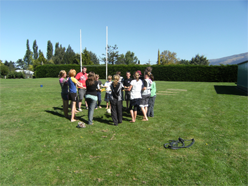
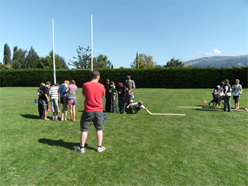

Outram ABL
Activity Based Learning is one of the tools we were taught at our first block course. This is the art of using games to make a point as a learning tool. My first one was at Mana College in Porirua. This went very well because the information was fresh in our heads and we were able to tackle it in a large process group.
Once we had returned from Block Course we were required to do at least four other ABL sessions to get that requirement ticked off. I did many of my sessions at Outram School. This was initially a worry for me because I didn't have a process group in Dunedin so had to do the planning by myself. Luckily the fabulous Carolyn and the fantastic Year Twos from Gore and Alexandra came up and helped me out by taking some of the class in the ABL sessions to make the groups more manageable.
Outram was a great school to do this at because the young people were keen to acheive every activity and then do it better the next time. We got a passing the ball-name game completed in 1.9 seconds and they were wanting to try and do it better!
I found the teachers annoying because they would try and tell the young people how to do the activity or blatantly point out when they thought the young people were doing it wrong. The worst part was when one of the teachers removed a disruptive young person from the group, thus eliminating a great debriefing element.
I love ABL sessions. The discussion is the best part because you are not telling the young people what to think and say but rather are asking them what they think. This leads to some fantastic discussions that often you cannot plan for. I also love just giving the rules to the young people and then seeing how the young people process the rules. My favourite thing to do is give the instructions then see them processing the information, within minutes you have people coming and asking for more rules and boundaries. I then get great pleasure from just reciting the rules I had already laid out. I learnt a lot about time keeping and the importance of being flexible with your program. When doing ABL I found that one good activity for 45 minutes trumps five average ones.